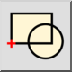
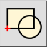
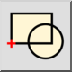
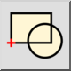

C 選択からブロックを作成
ツールバー/アイコン:
 

メニュー: B ブロック > C 選択からブロックを作成
ショートカット: B, C
コマンド: blockcreate | bc
ツールバー/アイコン:
 

メニュー: B ブロック > C 選択からブロックを作成
ショートカット: B, C
コマンド: blockcreate | bc
既存のエンティティから新しいブロックを作成します。
ブロックは、ブロック・リストに加えられます。また、その実体は図面に挿入することができます。
第一に選択したエンティティは削除され、新しく作成されたブロックのブロック参照と取り替えられます。